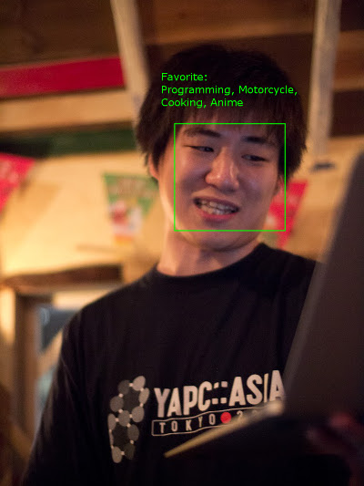
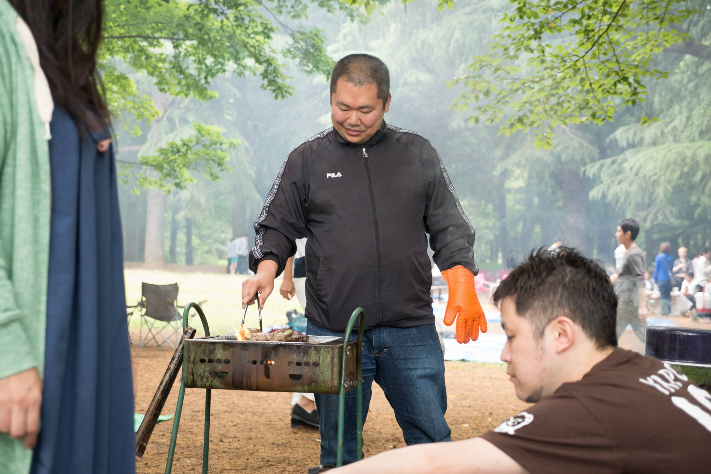
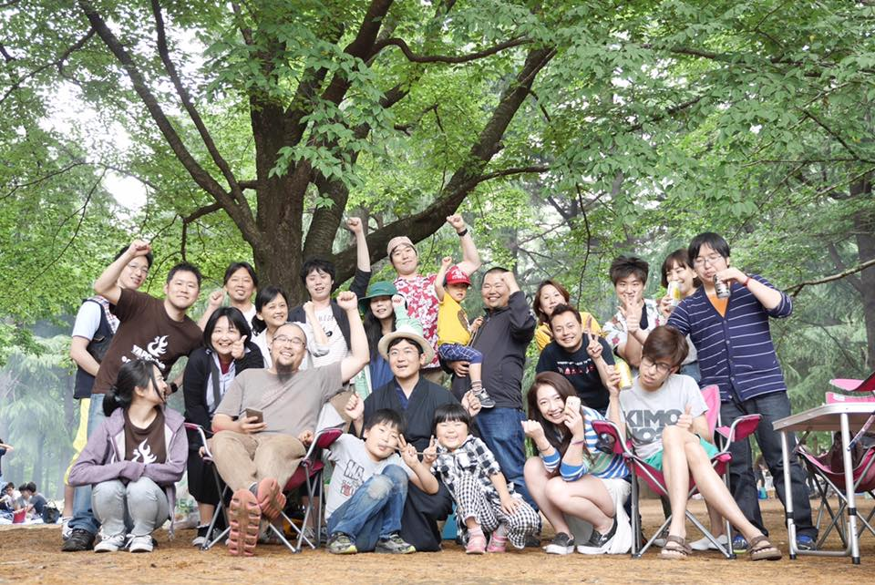

Tumblrにブログのお引越し？をします。
written:
今見ているこのブログですが、http://ytnobody-riji.azurewebsites.net/ へアドレスを変更し、今後更新をしない方針とします。
そして、新しいブログは引き続き http://ytnobody.net/ で閲覧できる様に更新していきます。見れない場合はhttp://ytnobody-tech.tumblr.com/ で見れます。
引き続きよろしくお願いします。
written:
今見ているこのブログですが、http://ytnobody-riji.azurewebsites.net/ へアドレスを変更し、今後更新をしない方針とします。
そして、新しいブログは引き続き http://ytnobody.net/ で閲覧できる様に更新していきます。見れない場合はhttp://ytnobody-tech.tumblr.com/ で見れます。
引き続きよろしくお願いします。
written:
どーも、わいとんです。
主題のような作業をするのに際し、Sisimaiが大変便利だったので、APIコンテナを作ってしまいました。
SYNOPSISに書いてあるままですが、まず docker pull ytnobody/sisimai-api をしたのちに
docker run --rm -it -v /path/to/mailbox:/opt/mail -p 5000:5000 ytnobody/sisimai-api
とすればだいたい起動できます。 /path/to/mailbox には、エラーメールが入ってるメールボックスを指定してあげましょう。
コンテナが起動した状態で http://your-docker-host:5000/ とかにリクエストをすると、エラーメールのサマリーをJSON形式で取得できます。内容についてはSisimai::Dataのプロパティを参照してください。
エラーメールの解析には Sisimai が大変便利です。それをさらに雑に扱いたかったので、勢い余ってJSON-APIを作ってコンテナ化してしまいました。
ちょっとした小間使いにちょうど良い使い勝手になっていると思いますので、どうぞよろしくお願いします。
written:
どーも、わいとんです。
近頃、業務の延長線上の分野として、顔のパーソナライズ認識、及びそれらのリレーショナルな利用について興味が湧いております。
例えばFacebookやvk.comなどのような実名SNSでは、概ね以下のような情報を登録するように促されることでしょう。
さて、これらの情報を一般的なリレーショナルデータベースのテーブル構造として捉えた場合、「姓名」「性別」「年齢」「居住地」「興味のあること」でのレコード検索が可能かと思います。
ところがもし、「顔画像」の近似値でレコード検索できるとしたら・・・
端的な例えですが、こんなことができるようになるわけですね。

2011年の写真くらいしかさっくり入手できなかったのですが、頭の上に何か表示が出てますよね。その気になれば、年齢とか居住地とか出せそうではあるのですが、プライバシー保護の観点から、表示されて良い情報は非常に限定的かと思います。
こんな感じのことをMicrosoft Cognitive Servicesを使えば実現できそうだなぁ、と直感しておりまして、ひとまず一番慣れているperl5で利用できるようモジュールを書いてみました。
ytnobody/p5-Net-Microsoft-CognitiveServices-Face
ちなみにCognitive ServicesのFace APIは、試すだけなら3万トランザクション/月まで無料ですので、割といい感じだと思います。
※Microsoft Cognitive Servicesを利用するためには、あらかじめMicrosoft Azureを利用している必要があります。ここではAzureやCognitive Servicesの設定については細かく説明しませんが、Azure上でCognitive Services - Face APIをデプロイするとAccess Keyが払い出されるので、そのことだけは覚えておいてください。
まぁeg/identify.plあたりを見てもらえると何となく使い方などがわかるとは思うんですが、一応解説。
Net::Microsoft::CognitiveServices::Face(以下CS::Face)のインターフェースは、ほぼFace APIのドキュメンテーションに合わせて作ってあります。したがって、Face APIのドキュメンテーションを読んでおかないと使い方がピンとこないです。
ハイ、名前が長いのです・・・
my $api = 'Net::Microsoft::CofnitiveServices::Face';
まずは何をするにもAccess Keyを食わせないことにはアクセスさせてくれませんので、これを食わせます。
$api->access_key('YOUR_ACCESS_KEY');
YOUR_ACCESS_KEY は適宜ご自身のAccess Keyに置き換えてください。
人物情報を格納するために、Face APIにてPerson Groupを作っておく必要がありますので、これを作ります。 $person_group_idは半角英数及びハイフン・アンダーバーが利用可能です。 nameは文字列で好きな値を設定できます。
my $person_group_id = 'my_person_group';
$api->PersonGroup->create($person_group_id, name => 'My Person Group');
顔画像の登録をする前に、人物情報となるPersonをPerson Groupに登録していきます。name及びuserDataに任意の文字列を設定できます。
my $person = $api->Person->create($person_group_id,
name => 'ytnobody',
userData => 'Favorite:Programming,Motorcycle,Cooking,Anime',
);
先ほど登録した人物情報に顔画像を紐付けます。$imageには、外部から参照可能なurlを食わせる必要があります。
my $person_id = $person->{personId};
my $image = 'https://lh5.googleusercontent.com/-8qD5BkKOV3g/TtpRC-8J_wI/AAAAAAAAAlY/yYk2AFtM51U/s1024/20111203-P1000424.jpg';
$api->Person->add_face($person_group_id, $person_id, $image);
顔画像の登録が済んだら、Person Groupに顔画像の学習をさせます。学習には顔画像の数によってかかる時間が異なりますが、学習の済んでいないPerson Groupでは人物特定ができませんので、顔画像の登録後には必ず実施する必要があります。
$api->PersonGroup->train($person_group_id);
なお、以下のようにすることで学習状態の確認が可能です。
my $result = $api->PersonGroup->training_status($person_group_id);
say $result->{status}; ## "succeeded" となっていれば学習完了。
全く別の画像から顔画像を検出します。
my $detected = $api->Face->detect('https://mynavi-agent.jp/it/geekroid/ent51_img14.jpg');
my $face_id = $detected->[0]{faceId};
検出できた顔画像から、該当する人物のpersonIdを取得します。faceIdsには本来複数のface_idを食わせることが可能ですが、今回は1件のみ食わせました。
なお、maxNumOfCandidatesReturnedにはマッチした人物の件数を指定できますが、1を指定することで一人に絞り込むことができます。
confidenceThresholdには一致率を0〜1の範囲で指定ができますが、この値に及ばない一致率の結果を足切りすることができます。
my $ident = $api->Face->identify(
faceIds => [ $face_id ],
personGroupId => $person_group_id,
maxNumOfCandidatesReturned => 1,
confidenceThreshold => 0.6,
);
my $candidated_person_id = $ident->[0]{candidates}[0]{personId};
ここまでである程度「この人間ですよね？」というレベルのマッチングがかかっているので、後はpersonIdを元にPersonを取得できればOKという感じになります。
$person = $api->Person->get($person_group_id, $candidated_person_id);
printf "name => %s \n%s\n", $person->{name}, $person->{userData};
PerlからMicrosoft Cognitive ServicesのFace APIを利用するためのモジュールNet::Microsoft::CognitiveServices::Faceを作ってみたので紹介しました。
Cognitive Servicesには他にも画像・動画などの認識にまつわるAPIがあるので、今までにない仕組みを作るのに一役買ってくれるんじゃないでしょうか。
written:
どーも、わいとんです。
タイトルの通り、昨晩救急車のお世話になりました。まさか自分で自分のために救急車を呼ぶことになろうとは、僕自身非常にショックを受けております。
ざっくり言うと
「早めに帰宅できたので晩酌していたら、突然目が眩んで右首筋が痺れ、右半身全体にかけて、左半身も一部痺れてヘナヘナと倒れこんだ」
というようなことが起こりました。
あまりに突然でしたし、父親が過去にくも膜下出血で倒れているので、最初は脳梗塞を疑って念のため救急車を呼びました。
そもそも昨日の東京の気温をみてみると・・・

羽田で38度！自宅のある大井町駅付近は羽田からほど近いため、この気温と大差なかったんじゃないでしょうか。
そして夜８時を過ぎても32度をキープ。正直、道産子には厳しい・・・＞＜
実は前日の夜中、同僚が深夜メンテ作業を行っており、気になって断続的に睡眠とSlackを往復しておったのですが、そのお陰で疲労が抜けなかったという下地がありました。
また、思い返してみると先日は水分の摂取量がいつもよりも少なかったような気がします。（とは言っても普段から水分摂取量を気にしているわけではないので、気のせいかもしれないですけど）
そして前述の異常な高気温。多分沖縄より暑かったんじゃないですかね・・・
そこにトドメのビール。これが良くなかったんじゃないかなと思います。
実は昨日、ビールを飲んでも「んまあああああアァァァイッッッ！！！！！」とはならなくて、飲みかけのプレモルを途中で嫁さんにあげちゃったくらいには美味くなかったんですが、その時点で体がビールを拒絶していたのかもしれませんね。
搬送先では脳に異常がないかCTスキャンで調べてもらったのですが、特に異常なしとのことでした。
その後問診・眼窩診察しましたが、これも異常なし。
脳外科医曰く「熱中症からの筋痙攣と意識障害じゃないか」という診断。「水分をしっかりとって、エアコンの設定温度は低くしてください」というアドバイスをいただきました。
written:
どーも。わいとん・イン・ザ・クローズドオオイマチです。
7/2(土)〜7/3(日) に日本マイクロソフト社で開催されたYAPC::Asia Hachioji 2016 mid in Shinagawa(以下YA8C)で、プレイングマネージャとしての知見を語ってきました。このような機会を設けていただいたuzullaさん、makamakaさん、そして会場にまつわる準備をしてくれたmyfinderさん、スタッフの皆さん、ありがとうございました。
ヤパチー最高だったしありがたい
— 寝床おじさん (@ytnobody) July 3, 2016
圧倒的であった
— 寝床おじさん (@ytnobody) July 3, 2016
たなかさんのD部屋でのトーク、アレは本当にMS系テクノロジーとウェッブ系おじさんが邂逅していた瞬間だと思う。
— 寝床おじさん (@ytnobody) July 4, 2016
基本的には最高であったわけですが、私はほとんど「飛び入りトークセッションコーナー」（通称Dルーム）というところに常駐してまして、明らかに相当ディープなセッションが多かったという気がしております。
唐突に発表スライドを書きながらBeta版と称して発表する人、前打ち合わせなしにPHP漫談をやってのける２人組（というか片方は主催）、RHEL + .NET Core + VSCode で即席WebAppを仕立て上げるツワモノなどなど、大変にバラエティに富んだ内容でした。
打ち上げでは、uzulla氏からYA8Cの象徴（？）という見えないタスキをpapix氏に託す場面もありましたが、いずれきっと次があるだろうし、彼らがヘルプを求めてきたときにはできる限りの手助けはするつもりです。
待ってるぞ、次回！
written:

6/10(金)、渋谷は道玄坂上にて、@i47_rozary氏主催によるPM Beginners #2に参加してきました。
Scrum was fired/スクラムはやられた というスライドで発表しました。
上流工程のボトルネックを少なくするため、各上流工程の合間にかならずレビューを入れる方法を ReDD - レビュー駆動開発 という名で再定義してみたのですが、言ってしまえば「正しいウォーターフォール開発」です。
しかし、ウォーターフォールっていうだけで若者から加齢臭扱いされて逃げられてしまいますし、そもそもウォーターフォールをちゃんとわかっていない人も多いので（私も含めて）、一旦要素の再定義を行って、既存のフローに+αしてみたというお話でした。
上流工程全てにレビューを入れるという方法はチーム内ですでに進めているのですが、ReDDという名はまだチームでもぜんぜん浸透させてない状況なので、さっさと定義を広めるところからやらないといけなくて、ある程度期間を経てから知見を改めて共有したいと思っています。
ぼくのチームではスクラムを回していた頃、スプリントは5日間で、スプリント終了時に振り返りをしていました。他の参加者の話を聞いてみると、結構半年とかのロングスパンで振り返りをしている人が多かったのが印象的でした。
エンジニアは基本的に開発技術や手法についていろいろと知見を書き入れることが多いかと思います。 しかし、どんな先鋭的な技術やどんな高速な処理実装も、プロジェクトマネジメントがダメダメだと、リリースされることのないコードの不良在庫となってしまいます。
コードの不良在庫を少なく、どんどんリリースできる体制を作るためにも、プロジェクトマネジメントの知見は有効だと思います。
written:
先日、BBQ::Buildersconという集まりがあったので行ってきました。
やるぞーと言い出したのはlestrratさん。

某アメコミヒーローっぽくキメるlestrratさん。写真からもやる気が伝わってくると思います。曰く、「ちゃんとブログ書いてね！」とのことでした。
会場の準備を整えてくださったuzullaさん、企画しておいしいお肉をご馳走してくださったlestrratさん、有難うございました！
なお、本エントリの写真はすべてuzullaさんの手によるものです。ありがたく拝借させていただきます。
みんな、「カンファレンス」と「美味しい肉」の両方とも好きだろ？ ちょうどいいイベントがあるんですよ… 基本的に僕が肉を焼いて皆様に食べていただきたいだけのイベントです。参加お待ちしてます https://t.co/4miCUobQPc #builderscon
— Daisuke Maki (@lestrrat) May 15, 2016
この言葉通り、まさにひたすらにlestrratさんが肉を焼きまくって切りまくって振舞いまくるというものでした。いわばシュラスコ状態。

こんな感じでlestrratさんが肉を焼き・・・
こんな感じで提供されました。どうみてもシュラスコです。
lestrratさんのchildプロセスくんを管理するuzulla氏。2nd childくん、お肉の食べすぎでお腹がパンパンになってました。
Builderscon の公式webに書かれている内容を超訳すると「技術ヲタクのためのお祭り」となっています。
今年の12月に開催予定であり、lestrratさんが主催となって、目下準備中という状況です。
ここにも書かれているように、特定の技術や業界に焦点を当てるというよりは「モノづくり」とそれに関連する技術全般をカバーするカンファレンスを目指しているようです。
従って、IT業界のエンジニアにとどまらず、もっとたくさんの業界から発表者が集まることを期待してよさそうです。
各業界の皆様におかれましては、ぜひ日ごろの「モノづくり」に対する情熱と技を披露していただけると良いのではないでしょうか（といってもトーク募集はまだのようですが）。
集まったメンバーにはまこぴーとかもずにおんなんかもいたんですが、まこぴーが自力で3Dプリンターを組み立てたらしく、自作プリンターで作った20面ダイスやら3Dプリンターの冷却パーツやらを持ってきていて、極まってるなぁなどと感じたりしました。制御方法も結構詳しく話してくれてて、「既にBuildersconは始まっているのだ！」感が出ておりましたね。もずにおんあたりには録画サーバの話とか調理器具の話をしてもらいたいかも。
あとだれかオフグリッドな太陽光発電関連の技術トークしてくれないかなぁ・・・

BBQ当日に集まった面々。この中からもきっと興味深いトークを発表してくれる人が出てくるはず！
written:
先日tutumがめでたくDocker Cloud 1.0としてリリースされました。基本的にDocker Cloudは有償サービスであり、コンテナ管理の手間をお金で解決するための仕組みという位置づけとなっています。
気になる料金プランですが、1ノードあたり1時間につき0.02ドルとなっており、Docker Cloudに1ヶ月間1ノードを管理させた場合、執筆時の相場でおよそ1500円ほどかかることになります。エンタープライズ用途に耐えうるものであることを考えると、ディスカウントっぷりがすごいなあ、という感想です。
ところで、今から新しくtutumにアカウントを登録しようとしてもDocker Cloudへとリダイレクトされてしまい、旧tutumへのアカウント登録ができない状態となっています。
そして既存のtutumアカウントをお持ちの方に、大事なことを２つお伝えしておきます。
TutumユーザにはDocker CloudのEarly Supporter Codeが付与されていて、Docker Cloudで2ノードまで無料で管理させておくことが可能です。
それでは「今から無料でコンテナを試してみたい！」という向きはどうすればよいか。まあ素直にDocker Cloudのfreeプランを考慮するのがよろしいかと思いますが、もうひとつの選択としてArukasを使ってみる方法があります。
Arukas(アルカス)とは国産のコンテナプラットフォームであり、現在ベータテスト期間中とのことで、以下の機能がすべて無償で利用可能です。
とりあえずアカウントを登録し終えると、ダッシュボードが表示されます。以下のような画面ですね。

ここで「新しいアプリケーションを作成」をクリックすると、画面が切り替わって以下のようなフォームが登場します。

今回は例として、先日作った「ギロッポンでシースーなAPIのコンテナ」を雑にデプロイしてみましょう。
まずNameのところには自分で識別しやすくするためのサービス名を半角英数で入力していきます。今回はgiropponとでもしておきましょう。
次にImageですが、今回デプロイするDocker Imageはこちらですので、ytnobody/shukugawa-atomとなります。
そしてPortに7654と入力します。これはytnobody/shukugawa-atomがtcp/7654を使うからですね。
これで以下のような状態になったかと思います。

ここまでできたら、あとは「アプリケーションを作成」ボタンをクリックするだけです。やたらシンプルですね！
実際にアプリケーションが起動すると、ダッシュボードのアプリケーション一覧には以下のようにgiropponという名前でアプリケーションが追加されます。

では、アプリケーションの詳細画面を見てみましょう。

アプリケーション新規作成のフォームとほぼ同じような構成になっている画面ですが、PortのところにコンテナへのエンドポイントURLが表示されているので、クリックしてみましょう。
すると、ytnobody/shukugawa-atomが提供するAPIがレスポンスを返してきますね。ではgetパラメータとしてtext=六本木で寿司を渡してみます。

このようにコンテナの動作を確認することができました。簡単ですね。
今度はダッシュボードからインスタンスをひとつ増やしてみましょう。giropponのアプリ詳細へ行き、以下のようにInstanceを2にして「保存」ボタンを押すだけです。

「保存」を押すとインスタンスが増えていることをアプリ詳細画面で確認できます。

インスタンスごとに別々のエンドポイントURLが発行されていることが分りますね。非常に楽なのがわかります。
一旦利点をまとめてみます。
Tutumでも同じことを書きましたが、ダッシュボードのUIがシンプルにまとめられており、非常に使いやすいです。これはサービスが成功する上で必須の項目ですので、大変すばらしいことだと思います。
驚くべきことに、ArukasはDockerノードについて一切を考慮する必要がありません。 いきなりDocker Imageを指定すればすぐに利用可能になりますし、「サーバレスアーキテクチャ」の一翼を担う存在と言えるかもしれません。
ダッシュボードを触ってみると、その動作の速度に驚かされるかと思います。 僕の場合、実際にサービスをデプロイしてアクセス可能になるまでの時間が1分かからない程度でした。 これは驚異に値する速度です。
これだけ簡単便利な国産コンテナプラットフォームなのですが、まだまだベータ期間ということもあって、課題がちらほらと見受けられます。
インスタンスを増やしたときにコンテナごとにエンドポイントURLが発行されましたが、残念なことにサービスエンドポイントURLは発行されませんでした。 このため、せっかく負荷対策でインスタンスを増やしても、自分でいちいち別にロードバランサーを用意し設定する必要が出てきてしまいます。
現状ではDocker Hubで公開されているDocker Imageしか利用できません。 従って、なんらかのクローズドなプロジェクトで利用するのは非常に困難となります。
ノードについて気を回す必要がない、という利点の裏返しとなりますが、自分でIaaSベンダーやサーバの選定ができません。 Docker Cloudの場合は各種IaaSやオンプレミスへの対応ができているので、この辺りはユースケース次第かと思います。
もしサーバレスアーキテクチャに寄せるのであれば、Arukasのほうが向いているかもしれないですね。
CLIやAPIが存在しないということは、自動化することが非常に困難であるということでもあります。
APIだけでも出てくるとだいぶ利便性が高くなりそうですね。
ダッシュボードについての記述があるのみです。 まだまだ機能が少ないので現時点では問題にならないのですが、上述したような機能が追加されたときにドキュメンテーションもあわせて強化されることを期待したいところです。
国産コンテナプラットフォームのArukasを紹介しました。 まだまだベータ期間ですので、機能面での見劣りが若干ありますが、サーバレスで使えて動作が大変高速、しかも簡単ですので、今後の動きに期待できそうです。
written:
遅くなりましたが新年おめでとうございます。わいとんです。
さて、書き初めってほどのものでもないんですが、タイトルのようなものをつくってみました。
これは過去にlestrratさんが発表したAcme::ShukugawaAtomというCPANモジュールをAPI化し、dockerコンテナに放り込んだだけのものです。
ytnobody/shukugawa-atom on docker hub
以上、非常に雑なネタでした。
written:
いわゆる個人的な今年の振り返りなどです。長いので斜め読みで結構かとおもいます。
今年の初頭はまだ、前職の大手IT企業でサーバサイドのコード実装を行うプログラマをしていたわけですが、30ちょうどで入社してから4年目の冬、ふと数年先を想像して、自分はこのままで良いのだろうか？という疑問を持つようになりました。
回りの仲間たちは本当にすごい方々ばかりで、技術力や知識量・センスなど、明らかに自分では真似のできないレベルのなにかを皆さんが持っていました。そういった方々の織り成すコードを見て、こういうやり方があるのか、と関心する機会に恵まれたことを、改めてありがたいことだったと感じております。現在僕は非常に生産効率の良い実装ノウハウを多数身につけることができ、実務レベルで活用することができております。
過去にも書きましたが、今年4月に上述の大手企業を退職し、乃木坂のIT企業に入社しました。お世辞にも大手企業とは言えない、小さい会社です。しかし、扱っているシステムは決して小さくないものですし、捌いているトラフィックも4から5Gbpsほどと、かなりの規模と言えるものです。
僕は、大企業の「大企業っぽさ」が苦手でして、そこに身を置くことによって自分が弱ってしまった感覚があったのを覚えています。一時期、そんな自分を指して「牙を失った」とか「狩りをする爪がない」という表現でその軟弱さを自嘲していたことがありました。
ある時、なんでそういう風に感じてしまうのだろうか、と温泉に浸かりながら考えていたとき、とある仮説をたてて考えてみたことがあります。
「人間は、環境が求める以上の存在になることはできない。」
そうすると、実は環境が僕の苦手なところを要求していただけであり、たまたま弱かった面が露呈しただけだった、ということではないのか？
苦手な部分について頑張って克服することもできるだろう。でも、それはほどほどにしておかないと、人生はそんなに長くない。もっと自分の武器を売り込める環境を模索しなくては。
当時僕自信の過去を振り返った時に、大まかに以下のような武器を持っている、と認識していました（今思えばこれはやや盛りすぎな気がしてる）。
当時はこれらの武器のうちの一部しか活用されてないな、という感覚があったのを覚えています。
次のキャリアを選ぶときに、今までやってきたことをそのまま選んだのであれば、おそらくもう一度同じ結果が待っていることだったでしょう。一般的に大きい企業ほど、プログラマであればその人をプログラマという枠でしか扱わないはずです。能力の多面性を生かすことを考えたりはしないでしょう。
であれば、最初から多面的な能力を要求されるポジションに就けば良い。例えそれが自分にとって未経験のポジションであっても、能力的には今までの経験を生かすことができるだろうし、それが期待されるはず、と考え、小さいIT企業に転職し、グロースハッカーというポジションをでっち上げることにしたのです。
この辺の発想の転換には、僕が主催をやっているMachida.pmという集まり？の影響がものすごく大きいです。
当初こそサーバサイドエンジニアという肩書きでしたが、最終面接の時点から徹頭徹尾グロースハッカーであることを主張し続けましたし、考え方も行動もグロースハックの観点を軸に、ただし日本の世の中で言われているグロースハックとは違う、もっとエンジニア的なグロースハックを実現することに力を使うことにしていました。
まず、社内の雰囲気を変えるところからやっていくことにしました。悪い噂に怯える仲間には「じゃあ僕が真相聞いてきます」と言って当事者に聞きにいったりしました。煮えきらない仲間には飲んだ勢いで「全力で協力しあっていこうぜ、背中は任せたぞ、その代わりお前の背中は任せてもらうぞ」みたいな感じで絡んだりもしました。とにかくメインの業務に集中してもらいたいという一心で、その他の消耗しそうな要素を徹底的になくしていくよう努めたつもりです。
そして、マーケティング部門との連携を進めるべく、分析基盤の強化やモニタリング基盤の整備を行いました。また、インフラ部門の新設、エンジニア採用における人事部門との連携、エンドユーザからのフィードバックを直に受けるサポセンとの連携など、事業生産効率の向上を狙い、各部門とテクノロジー部門との繋がりを築くことができたと思っております。
あくまで僕が目指してきたのは「生産効率の向上」この一点に尽きます。肩書きなんてものは後でついてきたものなのでこの際なんでも良くて、仲間を信頼できる文化を社内に根付かせ、個人個人のマイナス面をチームで補い、生産能力を遺憾無く発揮できるチームを作っていきたい、というのが今の目標となっています。
この手のポエムを書くことが増えてきましたが、結局のところエントリを書くこと自体が振り返りと言えるんじゃないでしょうか。
行動経済学に基づいたマーケットエンジニアリング、なんていうのは面白そうですよね、とか思っていたり。
このエントリは査読とかしてないので、とくに雑です。